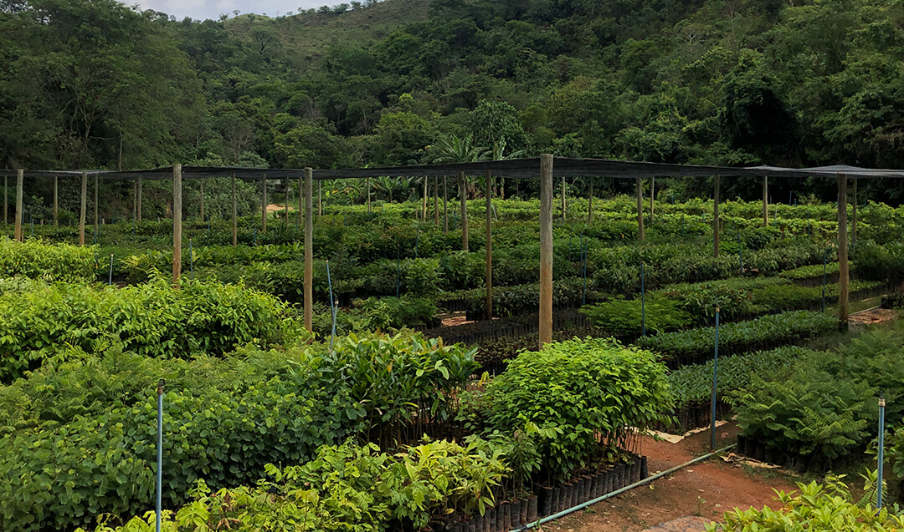
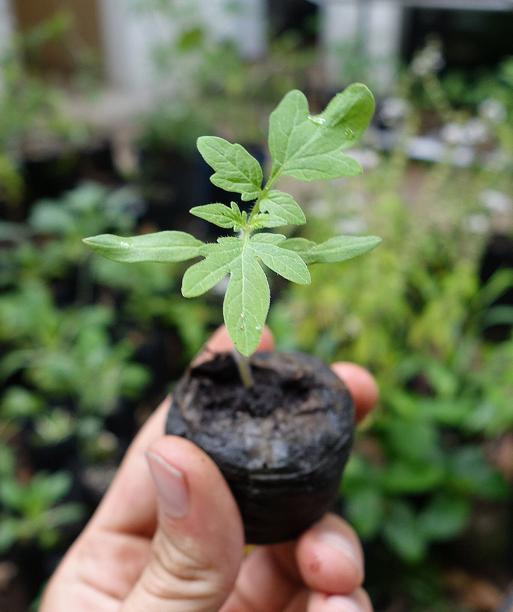

Sobre a SM Mudas
Cultivando qualidade, confiança e sustentabilidade há mais de 40 anos.
+40 anos de experiênciaSomos apaixonados por transformar paisagens e contribuir para um mundo mais verde.
Missão
Fornecer mudas de alta qualidade, contribuindo para o desenvolvimento sustentável e a preservação do meio ambiente.
Visão
Ser referência nacional no mercado de mudas, reconhecida pela qualidade e compromisso com a sustentabilidade.
Valores
- Compromisso com a qualidade
- Sustentabilidade ambiental
- Ética e transparência
- Inovação e tecnologia
- Atendimento personalizado
Nossa Equipe
Uma equipe apaixonada, pronta para te ajudar a escolher as melhores mudas para o seu projeto. Conte com nosso atendimento humano e especializado!
Nossa Trajetória
1980
Fundação da SM Mudas
1995
Primeira expansão do viveiro
2010
Reconhecimento regional em sustentabilidade
2024
Mais de 40 anos de história e milhares de mudas entregues
“O que dizem nossos clientes

Comprei mudas frutíferas e nativas, todas de excelente qualidade. Atendimento atencioso e entrega rápida. Recomendo!— João Silva
Atendimento rápido
Fale conosco pelo WhatsApp